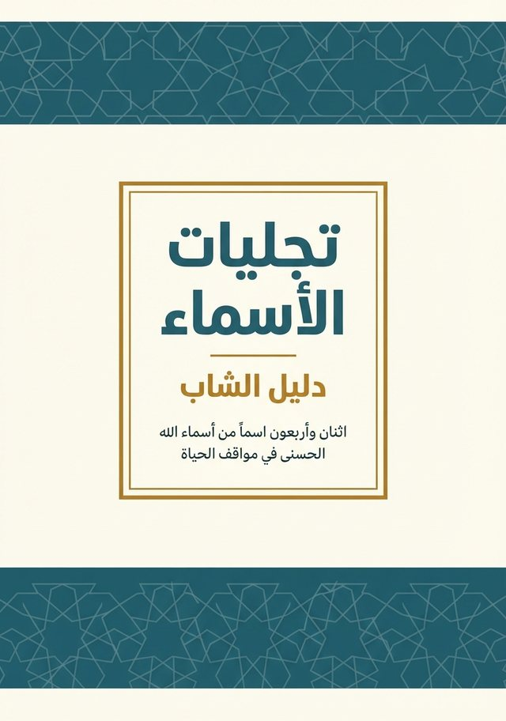
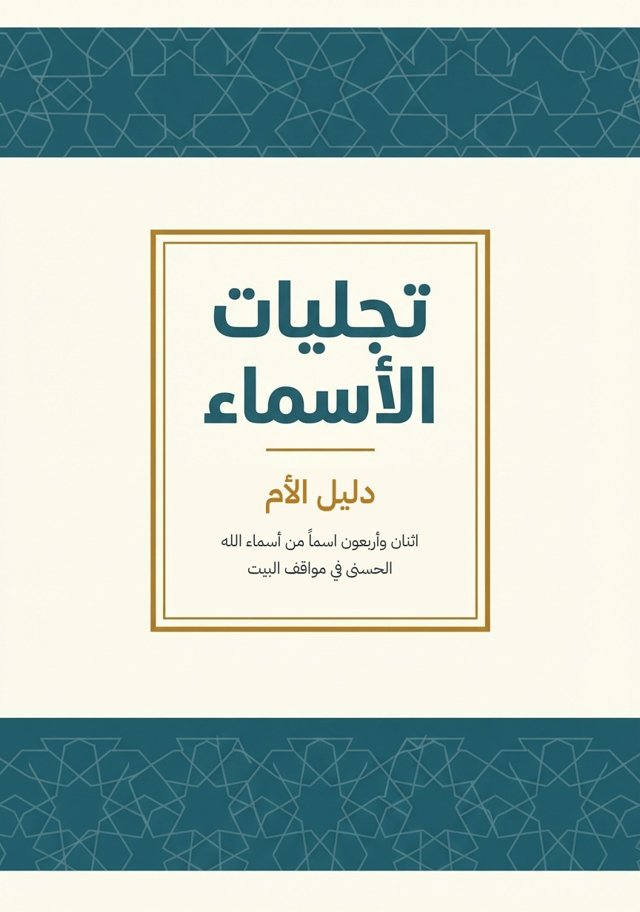
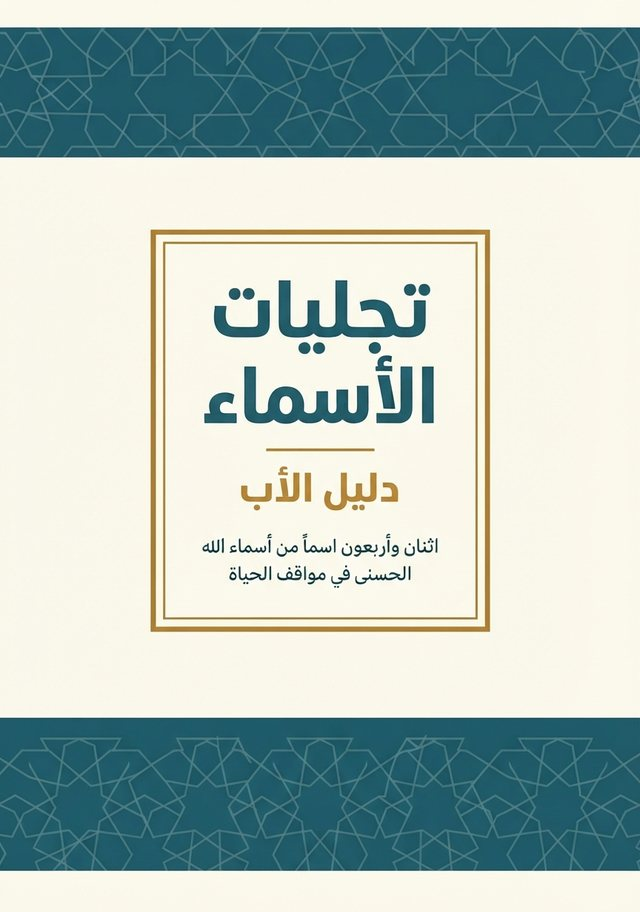

دليل الشاب
اثنان وأربعون اسماً من أسماء الله الحسنى في مواقف الحياة: الخوف والقرار والرزق والضعف والفقد والذنب والخلاف.
ثلاثة كتب تمشي مع أسماء الله الحسنى في مواقف الحياة. في كل اسم معناه وآيته وحديثه، وموقف وأسئلة وخطوة صغيرة. اقرأ هنا، ودوّن ما يخطر لك (يُحفظ على جهازك فقط)، أو نزّل الملف.

اثنان وأربعون اسماً من أسماء الله الحسنى في مواقف الحياة: الخوف والقرار والرزق والضعف والفقد والذنب والخلاف.

اثنان وأربعون اسماً من أسماء الله الحسنى في مواقف البيت: الأولاد والرزق والقدوة والرجوع والتوكل والصبر والشكر، مع ثلاثة مواقف من الواقع لكل اسم.

اثنان وأربعون اسماً من أسماء الله الحسنى في مواقف البيت: الأولاد والرزق والغضب والقدوة والقلق والفقد والشكر.
هذه الكتب للقراءة والتأمل، وليست مرجعاً شرعياً ولا طبياً ولا نفسياً. المطوّر: أسامة عبد الهادي الهاجري.